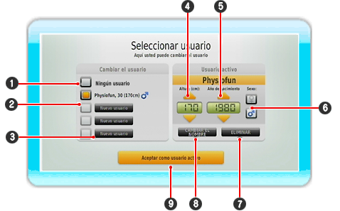

Aquí se pueden registrar nuevos usuarios y cambiar el modo Fisio o Diversión ó comparar los resultados del test de equilibrio en la red. Cuando usted inicie el Modo Fisio o el Modo Diversión se le preguntará si usted desea jugar con el jugador seleccionado actual. Si no se ha seleccionado ningún jugador entonces usted deberá registrarse primero o escoger otro jugador ya registrado.

| 1 |
Si usted no desea seleccionar ningún jugador, haga taconear aquí.
|
| 2 |
Aquí se ven los jugadores ya seleccionados con sus datos (edad, altura, sexo). El jugador activo actual está marcado por un campo naranja.
|
| 3 |
Haga clic aquí para registrar un nuevo usuario.
|
| 4 |
Introduzca la altura del jugador en cm. Use para ello las teclas con flecha o presione
 hacia arriba o hacia abajo. Mantenga presionada para seleccionar el número mas rápido. hacia arriba o hacia abajo. Mantenga presionada para seleccionar el número mas rápido.
|
| 5 |
Introduzca la fecha de nacimiento del usuario con las teclas con flecha. Mantenga la tecla presionada para escoger el número mas rápido.
|
| 6 |
Señale aquí con el mando de Wii el sexo del usuario y presione  . El sexo determina, si usted ve un hombre o una mujer durante el ejercicio. . El sexo determina, si usted ve un hombre o una mujer durante el ejercicio.
|
| 7 |
Borre el usuario activo señalando con el mando de Wii al botón de "borrar" y presione .
|
| 8 |
Modifique el usuario activo señalando con el mando de Wii al botón "modificar" y presione .
|
| 9 |
Escoja ese botón para seleccionar el usuario marcado y para volver a la imagen previa.
|